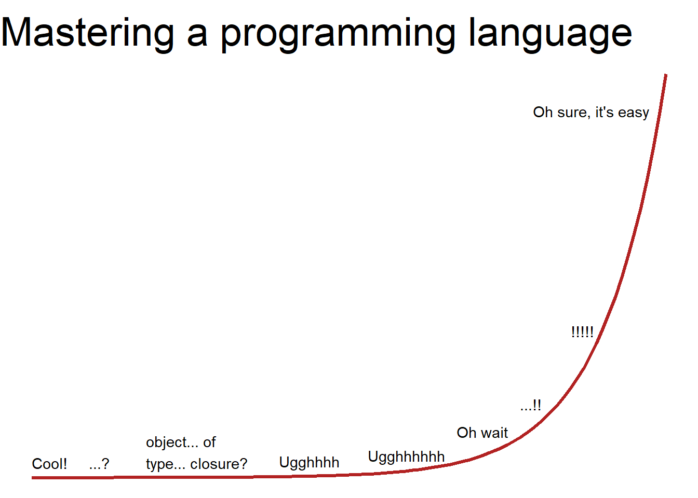

4 Tips on Working with R
This chapter contains a collection of tips to help you progress on your R learning journey. Remember that there are many ways to achieve a goal using R code and there is a large community of R users who are often willing and able to help with troubleshooting code (e.g., Stack Overflow, RStudio Community).
4.1 On labeling and naming objects
- R is case-sensitive. We covered this in Section @ref(learning-tips) but it is important enough to repeat.
CATS,cats,Cats,cAts, andcaTsare all different objects in R (Figure @ref(fig:cats))!
Object names cannot include spaces. Therefore,
my resultis not a valid name, butmy.resultormy_resultwill work. You can also use numbers in object names.Short, informative labels for objects are best. Obviously, there is some trade-off between labels that are informative (tend to be long) vs. those that are short (tend not to be specific). Use your own judgment and common sense when naming objects. Read more about R coding style in the tidyverse style guide’s Chapters 1 and 2.
4.2 On script annotation
When writing R code, you should include explanations to your future self or to other team members (e.g., when conducting data analysis for your group project). These explanations can be included as comments and annotations to your R code in the script.
Comments in R begin with #. R recognizes text that follows # as comments and ignores that text when running the code. Include annotations wherever possible; your future self and team members will thank you later.
Below is an example of some code that includes annotations and comments. Note that you can use as many # as you want.
## Start by defining an object
x <- 3+5
y <- x+6 # adding 2 to x and assigning the result to y for later use
z <- x*y # z is the product of x and y
print(z) # this function displays the result of z in the Console
## Next, I want to determine the mean across x, y, and z
xyz <- c(x, y, z) # this combines x, y, and z
print(xyz)
mean(xyz) # this line calculates the mean of the object, xyz
###############################################################################When you run this script, R recognizes the commands and ignores the comments. However, the comments and annotations are saved in the R script–and your future self and the rest of your team will be grateful.
[1] 112[1] 8 14 112[1] 44.666674.3 Be patient1
“Whenever you’re learning a new tool, for a long time, you’re going to suck… But the good news is that is typical; that’s something that happens to everyone, and it’s only temporary.” -Hadley Wickham
The benefits of learning by doing slowly build and compound over time. This means that one must invest time to learn R by doing. You can expect the learning curve to look something like this:
Warning: Using `size` aesthetic for lines was deprecated in ggplot2 3.4.0.
ℹ Please use `linewidth` instead.
Expect to ride the R rollercoaster (Figure @ref(fig:r-coaster)).

The following paragraph is an excerpt from Barrett’s (2021) blog post. The original post is worth reading and keeping in mind as you take this learning journey of R and, more broadly, data science.
This is the stubbornly quiet path of practice: our abilities lag behind our effort. At the ‘Ugghhhh’ stage, our internal motivation starts to dissolve. Sure, you can make a plot or whatever, but you’re still fighting errors all day. What do you have to show for it at this point? Not that much more, you might feel, than when you started. But our growth is rarely linear: often, it’s explosive, at least at critical moments. We suddenly begin to make connections, which help us build other relationships, and so on. Growth is never infinite, but it’s also rarely as linked to our immediate efforts as we expect.
Barrett, Malcolm. 2021. “Data Science as an Atomic Habit.” Malcolm Barrett. January 4, 2021. https://malco.io/2021/01/04/data-science-as-an-atomic-habit/.